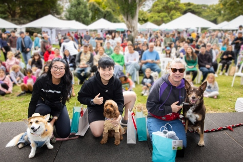
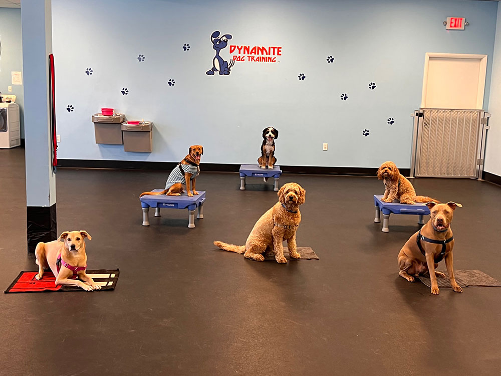
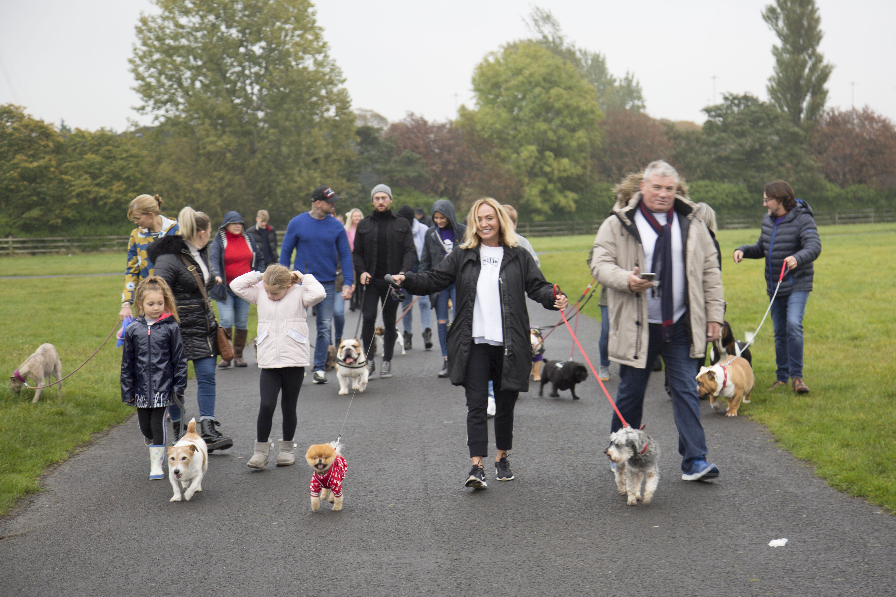

Our many events help to encourage local adoption

Join Us for Pups in the Park!
Come out and enjoy a day of fun and furry friends at our "Pups in the Park" event!
This delightful gathering brings together local rescue pups for a day of socializing and play.
See more...

Join Us for a Training Day Event!
Get ready for an educational and fun-filled day with your furry friend at our Training Day event!
We're inviting dogs and their owners to come together for a series of training sessions led by expert trainers.
See more...

Join Us for a Sponsored Walk!
Lace up your walking shoes and bring your furry friends for our Sponsored Walk event!
This enjoyable day out is perfect for raising funds and awareness for rescue shelters.
See more...
At Rescue Me, our mission is rooted in compassion and urgency. Every day, countless animals find themselves in dire situations, often through no fault of their own. We are dedicated to providing a safe haven and a second chance for these vulnerable creatures. By facilitating quick adoptions, we not only free up our resources to help more animals in need but also ensure that each pet transitions into a loving home environment swiftly. This reduces their stress, improves their well-being, and strengthens the bond with their new families. Our commitment is to rescue, rehabilitate, and rehome animals so they can live the joyful, fulfilling lives they deserve. Together, we create a community where every animal is cherished and cared for.